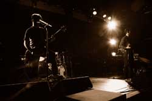

Music Venues
Chicago Theatre
Whether you have been there or not, the Chicago Theatre is stranger to none. Located downtown on Lake and State Avenue by the State train station, the Chicago Theatre hosts an endless array of performances every week. Not only does it host concerts for every kind of music, from classical to rock, but also plays, musicals, and more.
Aragon Ballroom
Located in Uptown on Lawrence and Winthrop Avenues, the Aragon Ballroom is the perfect place to see your favorite live music events. Ranging from rock, pop, electronic, and even some ethnical music, the Aragon Ballroom is the perfect place to find it all. Its large dancing hall permits for big concerts with huge audiences.
Metro
A smaller, more intimate venue located on Clark Street and Racine Avenue in Wrigleyville. A diverse selection of indie and alternative bands perform at Metro every week. It is more than likely that your favorite artist have played at Metro during their tour in Chicago. Its smaller size allows for better sound than bigger venues. If you love music, Metro is a place you must visit!
Subterranean
A venue located in Wicker Park on North Avenue by the Damen Blue Line station. A wide variety of musicians and artists perform at “the Sub,” from small rock bands to DJs and burlesque dancers. If you are looking for a cheaper, yet excellent quality show, Subterranean is your place to be at.
Thalia Hall
A young venue based in Pilsen on 18th and Allport Streets. Its location close to University Village and size allow Thalia Hall to not only have up-and-coming talent, but also well-known artists in its beautiful structure with amazing audio quality. Thalia Hall is not a place to miss on.